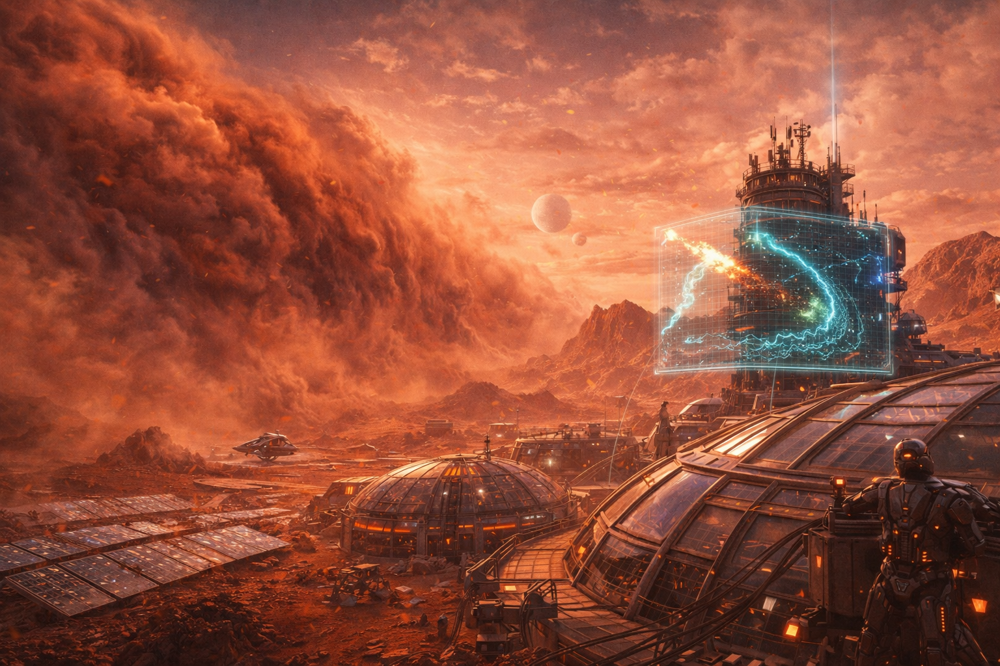
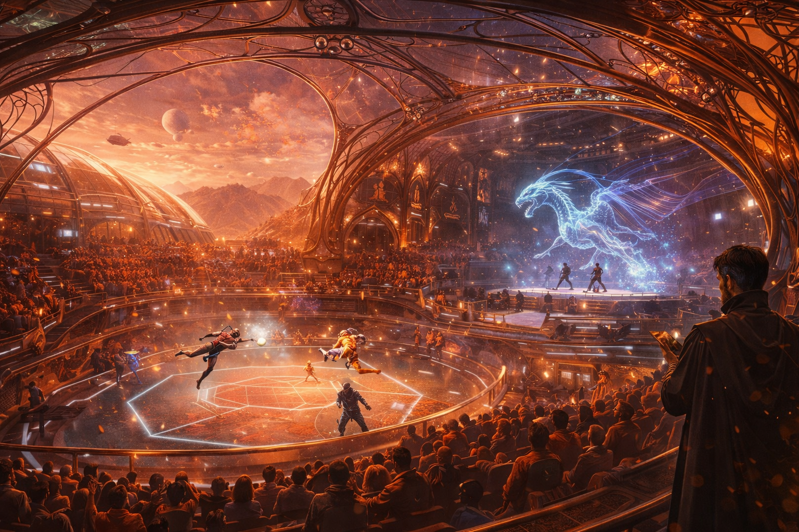
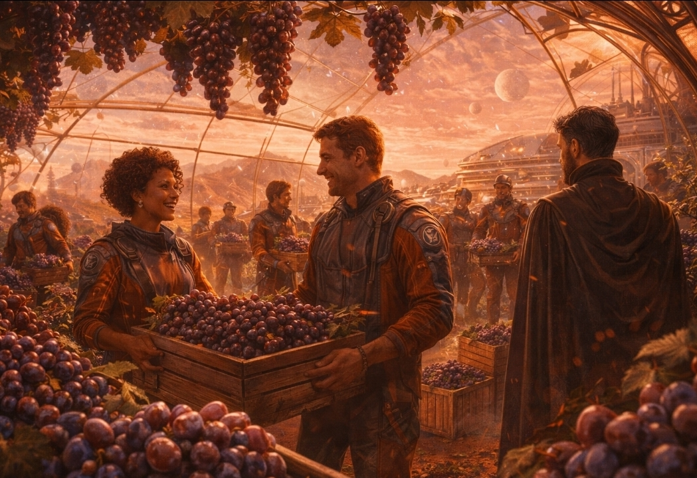

MARTIAN NEWS NETWORK
Latest Updates from the Red Planet and Beyond
First Martian-Born Generation Reaches Adulthood

The twenty-three individuals born during the initial colonization period have now reached adulthood, marking a historic milestone for the Martian colony. These "True Martians" represent the first humans to spend their entire lives on another planet.
Read Full Story →Breakthrough in Atmospheric Processing
Scientists at Olympus Research Station have developed a new method to extract nitrogen directly from the Martian atmosphere, potentially solving the colony's fertilizer shortage.
Read More →New Entertainment Dome Opens in New Shanghai
The Regent officially opened the Red Dust Arena, a state-of-the-art entertainment complex featuring zero-gravity sports, holographic theaters, and Martian martial arts demonstrations.
Read More →Earth Delegation Arrives for Trade Talks under Crystal Dome
Representatives from the United Earth Council have landed at Port Schiaparelli to negotiate new trade agreements for Martian resources and technology transfers.
Read More →AI Weather System Prevents Dust Storm Disaster

The colony's advanced AI weather prediction system successfully forecasted a massive dust storm 48 hours in advance, allowing critical infrastructure to be secured.
Read More →Martian Wine Harvest Exceeds Expectations. We're WINNING!
The first harvest from the Olympus Vineyards has yielded surprising results, with genetically modified grapes thriving in the controlled Martian environment.
Read More →Regent Saves Smuggled Whales, Creates Gloucester Martian Sanctuary
Two humpback whales abandoned by smugglers in the asteroid belt have been rescued by the Regent, who created a massive aquatic dome to house them. The whales have become an unexpected tourist attraction at Cape Ann, with Martians flocking to see the majestic creatures.
Read More →